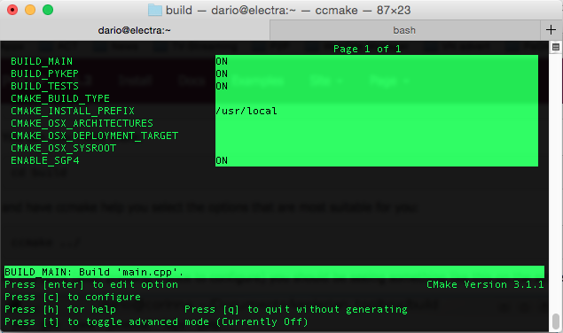

PyKEP supports 32 and 64 bits architectures and both python 2.7 and python 3.4. We are unfortunately not in the position to provide binaries for everybody, so you will most likely need to compile the source code youself. This process, under unix architectures is painless, while under windows architectures it can be troublesome. For this reason we tend to provide at least the win32-python2.7 version of PyKEP at each release.
Some of the releases have also binaries provided. This largely depends on whether one of the main developers has access to a working Windows machine at the time of the release. Download the binaries and extract the whole folder as it is in your python site-packages directory. (e.g. extract to C:/Python27/Lib/site-packages/)
Assuming you have prepared your system for compiling PyKEP (see Preparing your system to compile PyKEP) and that you have just downloaded the source code following the instructions given, see Download PyKEP code, you will have created a directory keptoolbox in your current directory, move there:
cd keptoolbox
You will now need to create a build directory where to build the source code, so:
mkdir build
You can now move there:
cd build
and have ccmake help you select the options that are most suitable for you:
ccmake ../
At this point (after pressing c once to configure) you should be seeing something like this on the screen:
You can now press ‘g’ to generate a make file and exit ccmake utility. You are back to the prompt where you can now type:
make
and:
sudo make install
Watch carefully the message in the terminal where the installation path is given to check that the correct python dist-packages or site-packages directory has been located
Here is a typical example of the output obtained:
[ 91%] Built target propagate_lagrangian_test
[ 92%] Built target propagate_lagrangian_u_test
[ 94%] Built target propagate_taylor_jorba_test
[ 96%] Built target propagate_taylor_s_test
[ 98%] Built target propagate_taylor_test
[100%] Built target sgp4_test
Install the project...
-- Install configuration: ""
-- Installing: /usr/local/lib/libkeplerian_toolbox.dylib
-- Up-to-date: /usr/local/lib/python2.7/site-packages/PyKEP/__init__.py
-- Installing: /usr/local/lib/python2.7/site-packages/PyKEP/core/_core.so
Unsing minGW things will be the same as under Unix, just make sure that
If your system has several versions of python installed the cmake python finder script are likely to mess up the versions. It is then a good idea to inspect the result of the command:
cmake ../
which could look something like:
-- OS detected: Linux
-- CXX Compiler detected: GNU
-- CMake Library additional search path:
-- Enabling '-Wall' compiler flag.
-- Enabling '-Wextra' compiler flag.
-- Enabling '-Wnoexcept' compiler flag.
-- Enabling '-Wdisabled-optimization' compiler flag.
-- Enabling '-ffast-math' compiler flag.
-- Enabling '-std=c++11' compiler flag
-- CXX compilation flags: -Wall -Wextra -Wnoexcept -Wdisabled-optimization -ffast-math -std=c++11
-- Python library: /usr/lib64/libpython3.3m.so
-- Path to where Python.h is found: /usr/include/python3.3m
-- Version detected for python libraries: 3.3.2
-- Python interpreter: /usr/bin/python
-- Version detected for the python interpreter: 2.7.5
-- Python modules install path: lib/python2.7/site-packages
-- Required Boost libraries: serialization;date_time;python
-- Boost version: 1.53.0
-- Found the following Boost libraries:
-- serialization
-- date_time
-- python
-- Detected Boost version: 105300
-- Boost include dirs: /usr/include
-- Boost libraries: /usr/lib64/libboost_serialization-mt.so;/usr/lib64/libboost_date_time-mt.so;/usr/lib64/libboost_python-mt.so
-- Configuring done
-- Generating done
-- Build files have been written to: /home/dario/Documents/pykep/build
Here you clearly see that while 2.7.5 is detected for the interpreter, the libraries and includes are 3.3.2. In these messed up cases the best thing to do is to manually input to cmake the exact location of the libraries, the headers and the interpreter by setting explicitly the variables PYTHON_EXECUTABLE, PYTHON_INCLUDE_DIR and PYTHON_LIBRARY. ere is an example that fixes the problem above by selecting explicitly python 3:
cmake ../ -DBUILD_PYKEP="ON" -DPYTHON_LIBRARY="/usr/lib64/libpython3.3m.so" -DPYTHON_INCLUDE_DIR="/usr/include/python3.3m/" -DPYTHON_EXECUTABLE="/usr/bin/python3.3m"